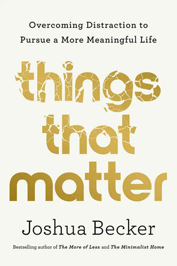
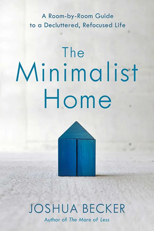
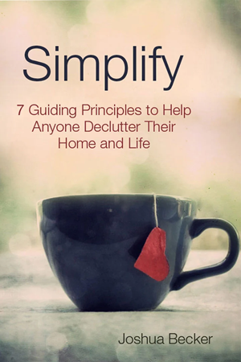
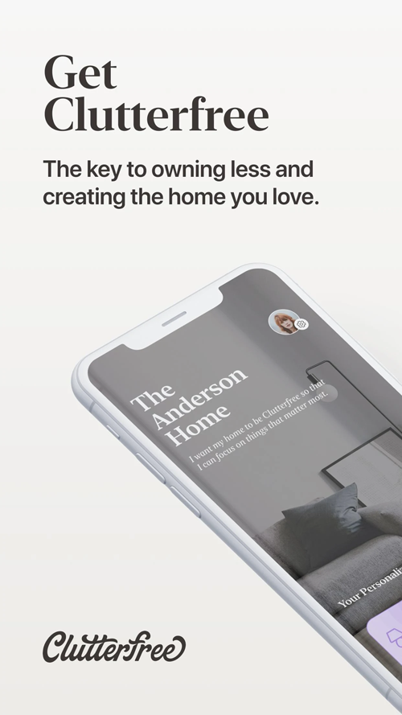
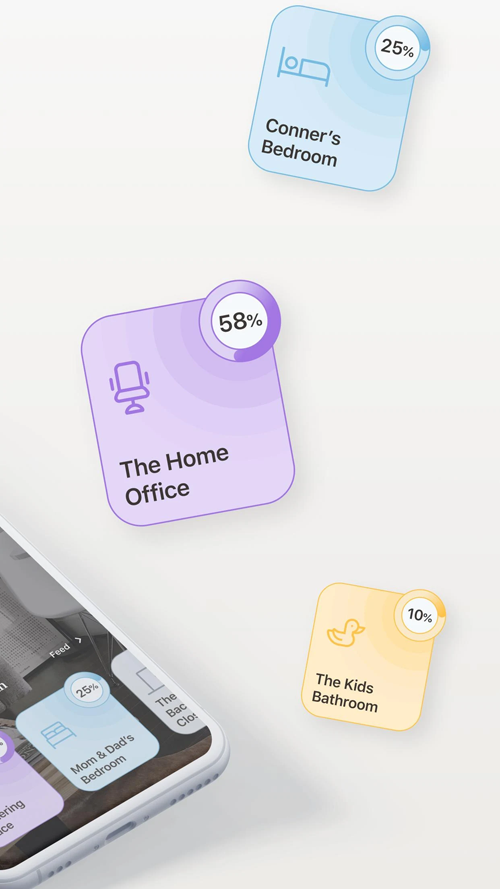
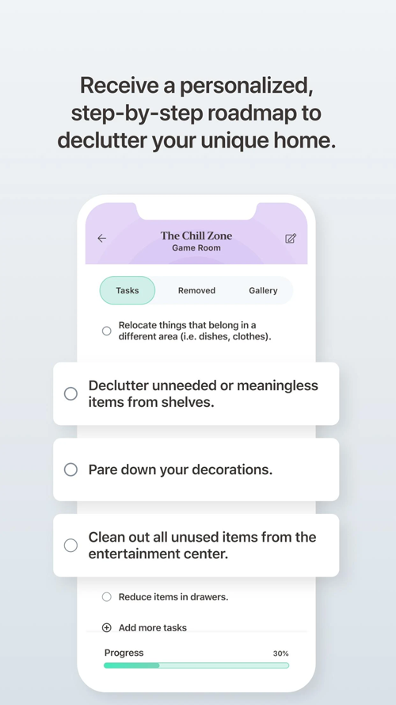
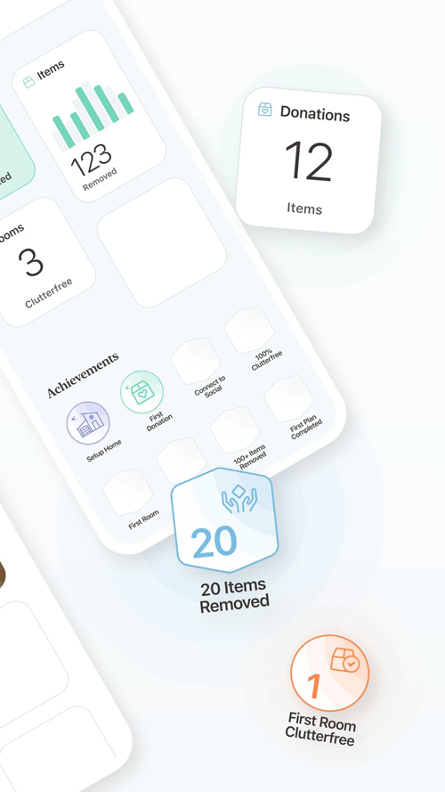
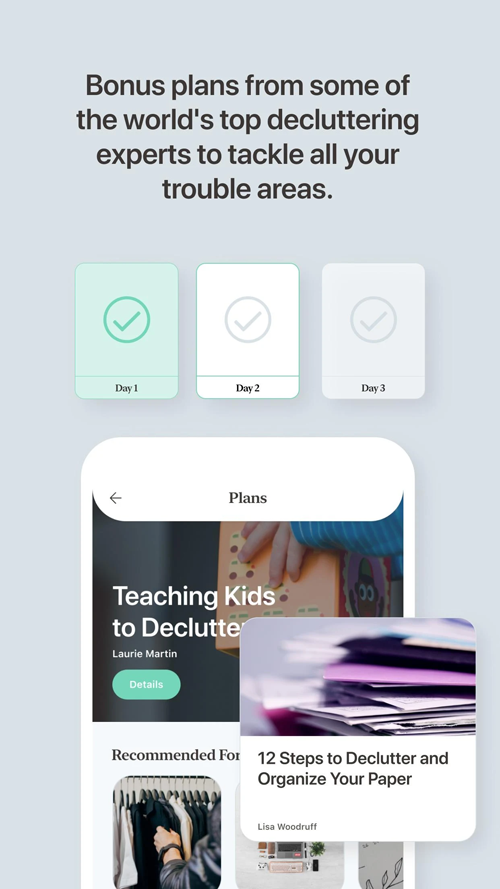

My story begins in suburban Vermont while I was cleaning the garage, my wife was cleaning the bathrooms
and my 5–year old son was playing alone in the backyard. I struck up a regular conversation with
my neighbor who
commented, “Maybe you don't need to own all this stuff.”
The juxtaposition was striking. My possessions piled up in the driveway… my son in the backyard… my day
slipping away… I immediately recognized something needed to change. My belongings were not adding value
to my life. Instead,
they were subtracting from it.
My family and I began donating, recycling, and removing our unnecessary personal possessions. We embarked
on an intentional journey to own less stuff.
As a result, we discovered more money, more time, more energy, more freedom, less stress, and more
opportunity to pursue our greatest passions: faith, family, friends. And we decided to write about
it.
Things That Matter: Overcoming Distraction to Pursue a More Meaningful Life

You. You matter.
Do you want to live a meaningful life — with very few regrets — and make a
positive difference in the world? But is culture distracting you from doing so? Perhaps
moments, days, and years go by without you
stopping to ask yourself, Am I living out my true purpose? Even if that question whispers to
you, are you brushing it aside because you don't know what to change in life's busyness?
Things That Matter is a book about living well. It's about overcoming the
chatter of a world focused on all the wrong things. It's about rethinking the common
assumptions of today to find satisfaction and
fulfillment tomorrow.
The Minimalist Home: A Room-by-Room Guide to a Decluttered, Refocused Life

The Minimalist Home takes us on a decluttering tour of every room in our houses
and apartments, showing how to decide what to get rid of and what to keep. Joshua offers
practical guidelines for simplifying
our lifestyle at home and addresses underlying issues that contribute to
over–accumulation in the first place.
The purpose is not just to create a more inviting living space. It's also to turn our life's
HQ — our home — into a launching pad for a more fulfilling and productive life
in the world.
The More of Less: Finding the Life You Want Under Everything You Own
We own too much stuff. We feel the weight and burden of our clutter every day. It redirects
our greatest passions to things that can never fulfill. And it distracts us from the very
life we wish we were living.
In The More of Less, Joshua helps you recognize the life–giving benefits
of owning less and craft a personal, practical approach to decluttering your home and life.
With action plans, lists, and appeals to the reader's quiet nature, Becker
successfully presents a well–rounded argument that a journey toward minimalism
is possible and even enjoyable.
Simplify: 7 Guiding Principles to Help Anyone Declutter Their Home and Life

Simplify is a celebration of living more by owning less. It calls for the end of
accumulating unnecessary possessions by highlighting the enjoyment of living with less.
Simplify will change the way you view physical possessions. And it will provide
you with the motivation to realign your life around your heart's greatest passion.
Children bring smiles, laughter, and energy into our homes. They also add clutter. Sometimes,
as parents, balancing life and managing clutter may appear impossible.
Clutterfree with Kids offers a new perspective and approach to overcoming
clutter. It invites us to change our thinking, discover new habits, and free our homes. And
it just may inspire you to live the
life you've been searching for all along.
A wonderful guide that any parent will find practical and inspirational.
I will be touring 12 US cities (across the Midwest and
South) to celebrate and discuss my newest book,
Things That Matter: Overcoming Distraction to Pursue a More Meaningful Life.
Speaking Events
Each topic is presented in a highly relevant, immediately practical way that seeks to connect with
the listeners' heart through humor, personal stories, sound reasoning, and practical steps of
application.
Blog
Becoming Minimalist is designed to inspire people to pursue their greatest passions by
owning fewer possessions. With over 1M readers every month, we're honored
to
have new readers every
day. If that's you, welcome.
Subscribe for weekly posts right to your inbox. sign me up
Clutterfree App
Declutter your home.
With the Clutterfree App, you will receive a personalized, step–by–step roadmap to declutter
your home. Also, you can track your progress, find inspiration, document donations, complete daily
challenges, or tackle
difficult decluttering areas using the included Bonus Plans.





Contact
For information about media, publicity, and speaking availability, please fill out the form below.